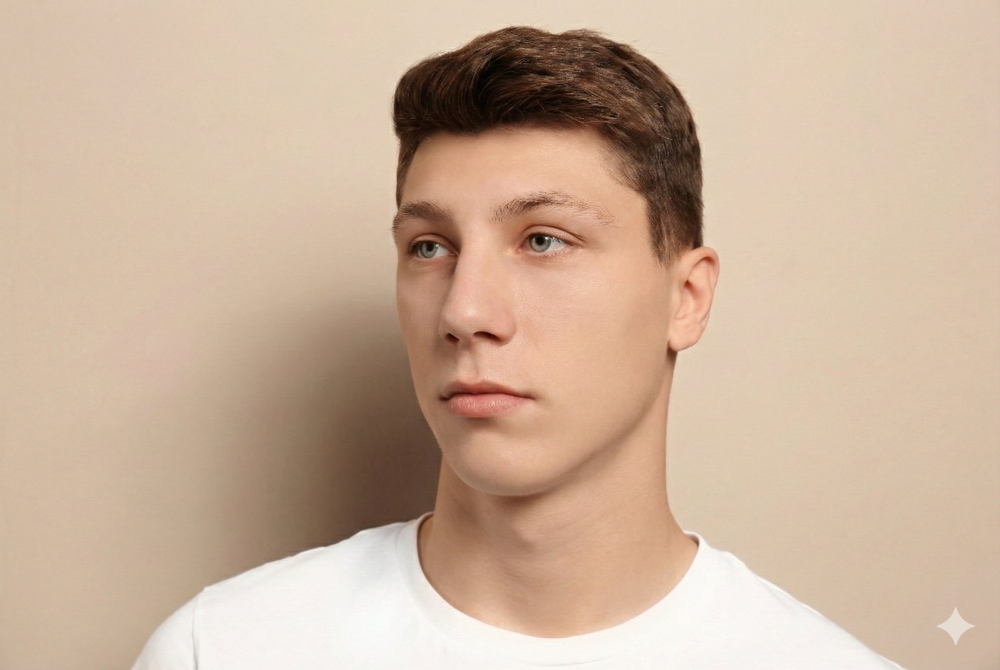
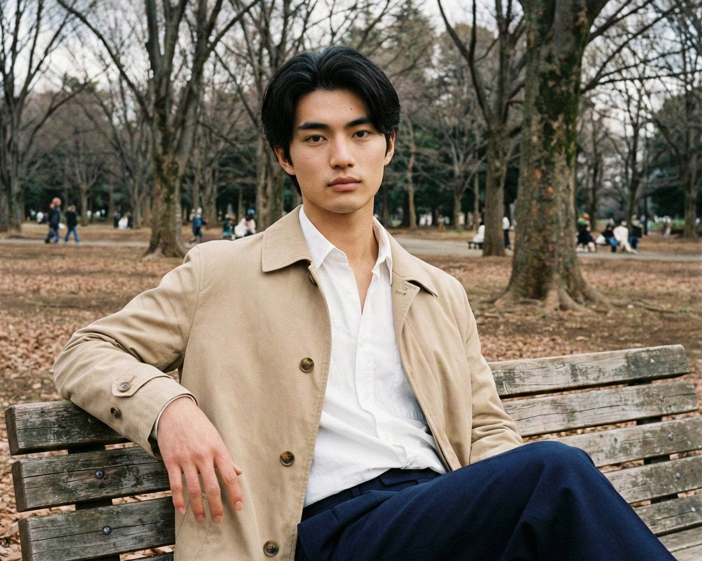

こんにちは、ツバサです。
突然ですが、僕はニキビがコンプレックスです。
中学くらいからずっと付き合ってきて、大人になった今も完全には治ってくれない。スキンケアも一通り試したし、皮膚科にも通ったけど、まあゼロにはならないんですよね。
写真を撮られるのも正直あんまり好きじゃない。このブログのプロフィールも、自分の写真を元にAIに作ってもらったイラストにしてました。写真を使いたい気持ちはあるんですけど、ニキビが写るのがどうしても嫌で。
そんなとき、会社の先輩がある提案をしてくれたんです。
きっかけは先輩の一言
うちの会社に5つ上の女性の先輩がいるんですけど、仕事がめちゃくちゃできる人で、マーケの知識も広い。たぶんモテる。いや関係ないけど。
ある日、僕がプロフィール写真をイラストから写真に変えたいけどニキビがなーって悩んでたら、先輩がさらっと言ったんです。
「Nano Bananaで消せば？ ニキビだけ消すのもできるよ」
Nano Banana。プロフィールのイラストを作ったのもNano Bananaだったけど、「写真からニキビだけを消す」という使い方は考えたことがなかった。
先輩いわく、「最近のAI画像生成は、既存の写真をベースにして部分的に変えることもできる。ニキビ消すくらいなら余裕だと思う」とのこと。
…やってみるか。
ということで、さっそく自撮りを撮ってNano Bananaに投げてみました。結果はこの記事の最後でお見せしますね。
先に、どれくらいの効果があるのかをストックフォトで見てもらいたいと思います。
まずはストックフォトでビフォーアフター
僕の元の顔を載せるのはさすがに勘弁してほしいので、効果を伝えるためにストックフォトのニキビ肌の写真で同じことをやってみました。
プロンプトは「ニキビだけを消す。それ以外の要素は変更しない」。
Before（ストックフォト）
After（Nano Bananaで加工）

どうでしょう。ニキビがきれいに消えて、肌のテクスチャも自然。そして顔の造形はほぼそのまま。
パッと見、Photoshopで丁寧にレタッチしたのと見分けがつかないレベルだと思います。
…でもこれ、AIで生成した画像なんですよね。
これってAI？レタッチ？ ー 先輩に聞いてみた
仕上がりがあまりにも自然で、「これってAI画像生成なの？ レタッチなの？」と本気でわからなくなったので先輩に聞いてみました。
「見た目は同じに見えるかもしれないけど、やってることは全然違うよ。Photoshopのレタッチは、写真の上からニキビ部分を消してるの。でもNano Bananaは写真を直接いじってるわけじゃなくて、ニキビがないそっくりさんを生成してるの」
…なるほど？
つまりこういうことらしいです。
従来のレタッチは、写真という「原本」の上から修正を加える作業。消しゴムで消したり、きれいな肌をコピーして貼り付けたりする。元の写真はあくまで同じもの。
一方、AI画像生成は、元の写真を「参考資料」として使って、新しい画像をゼロから生成している。つまり、仕上がりの画像は元の写真とは別物なんです。
先輩の「そっくりさん」という表現がすごくしっくりきました。ストックフォトのBefore/Afterを見ても、確かに「ニキビがないそっくりさん」と言われれば納得できる。そっくりさんだから、厳密には同じ人ですらない。でも見分けがつかないくらい似ている。
仕上がりが自然だったのは、それだけNano Bananaの再現精度が高いということなんだと思います。
…と、ここまで褒めてきたんですが、先輩から一つ指摘がありました。
「ニキビ消しの精度はすごいけど、よく見てみ。画質、落ちてない？」
言われて改めて見比べてみると、確かに。
髪の毛の質感がちょっとのっぺりしてる。まつ毛のあたりのピントがぼんやりしてる。写真全体も、元の画像と比べると若干シャープさが落ちてるような。
「これがNano Bananaの限界かな。私たちの仕事には使えないけど、プライベートのSNSとかマッチングアプリのプロフィールに使う分には十分だよね〜」
たしかに、スマホの画面でパッと見る分には気にならないレベル。でも拡大したり、印刷したり、仕事で使うには厳しいかもしれない。このあたりは正直に書いておきます。
で、ツバサはどうなったの？
お待たせしました。僕のAfter画像です。
最初は自撮りで試してみたんですが、思った以上にうまくいったので、ちゃんと外で撮った写真でもう一度やってみました。ニキビを消した上で、ちょっとだけイケメンに補正してもらっています。ちょっとだけですよ。

…どうですかね。
ニキビはきれいに消えてるし、ちょっとだけシュッとしてる気がする。でも「誰？」ってなるほどの別人ではない。…はず。
先輩の反応
「まあまあいいじゃん。詐欺ではないと思うよ」
…褒めてるのか微妙なラインだけど、先輩に「詐欺ではない」と言ってもらえたので、このままこのブログに載せちゃおうと思います。
使ってみて思ったこと
正直な感想をまとめます。
驚いた点：
仕上がりの自然さ。「AI画像生成」と聞くと、どこか作り物っぽいイメージがあったんですけど、Nano Bananaはかなり自然でした。ストックフォトで試したときは顔の造形もしっかり維持されていて、パッと見ではAIなのかPhotoshopレタッチなのかわからないレベルです。
見た目は同じでも中身は違う：
仕上がりが似ていても、「写真を修正した」のと「新しい画像を生成した」のでは、やっていることが根本的に違う。この違いは使う側としても知っておいたほうがいいなと思いました。たとえば証明写真や本人確認に使う写真を「AI生成でニキビだけ消す」のは、仕上がりが自然でもやめたほうがいいと思います。あくまでSNSのプロフィール写真とか、そういう用途ですね。
大事なこと
この記事で使っている画像はすべてNano Bananaで生成・加工したものです。僕はAI画像加工を隠すつもりはなくて、むしろ「AIでここまでできるんだ」という実験記録として発信しています。
まとめ
AI画像生成ツールでニキビを消すのは、技術的には十分可能でした。しかも仕上がりは思ったよりずっと自然。
ただ、見た目はレタッチとほぼ同じでも、「写真を修正している」のではなく「新しい画像を生成している」という仕組みの違いは理解しておいたほうがいい。そして元の写真より画質が落ちる点も忘れずに。スマホでSNSを見る分には気にならないレベルですが、拡大すると髪の毛や細部の質感が甘くなっています。使う場面を選ぶ判断基準になると思います。
僕はこれからもNano Bananaをいろいろ試してみるつもりです。マーケ素材としての可能性、他のツールとの比較…。このブログで実験の記録を残していきます。
気になることがあれば、コメントやDMで気軽に聞いてください。
関連する記事
ツ レタッチとは？写真の修正・補正・加工の違いをわかりやすく解説【初心者向け】 tsubasa-memo.github.io/what-is-retouch.html ツ 背景切り抜き・白抜きの方法比較｜AI無料ツールからプロ外注まで【2026年版】 tsubasa-memo.github.io/background-white.htmlよくある質問
よく読まれている記事
ツ 写真レタッチの外注料金まとめ｜15社の相場を1ページに集約【2026年版】 tsubasa-memo.github.io/retouch-pricing-database.html ツ レタッチ外注サービス比較｜個人でも依頼できるおすすめの7社【2026年最新版】 tsubasa-memo.github.io/retouch-services.html ツ 画像加工・写真編集の外注先はどこがいい？代行サービスの選び方 tsubasa-memo.github.io/image-editing-outsource.html ツ レタッチとは？写真の修正・補正・加工の違いをわかりやすく解説【初心者向け】 tsubasa-memo.github.io/what-is-retouch.html